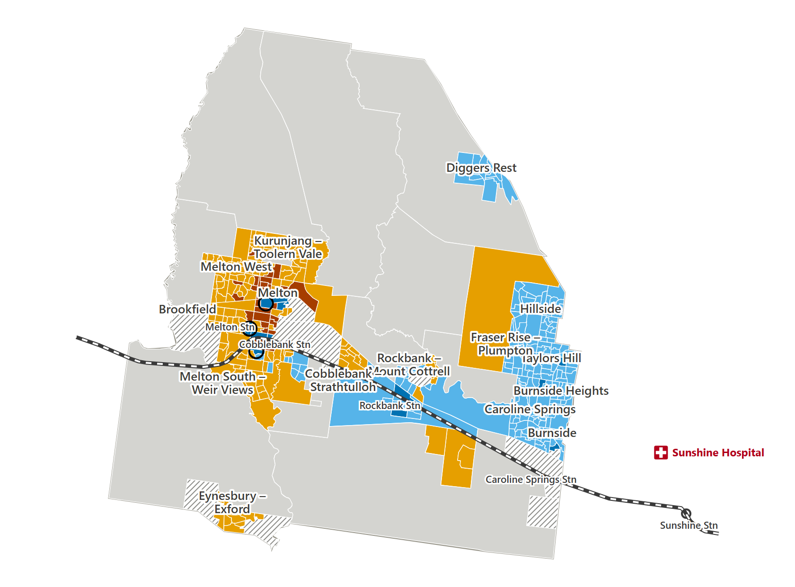
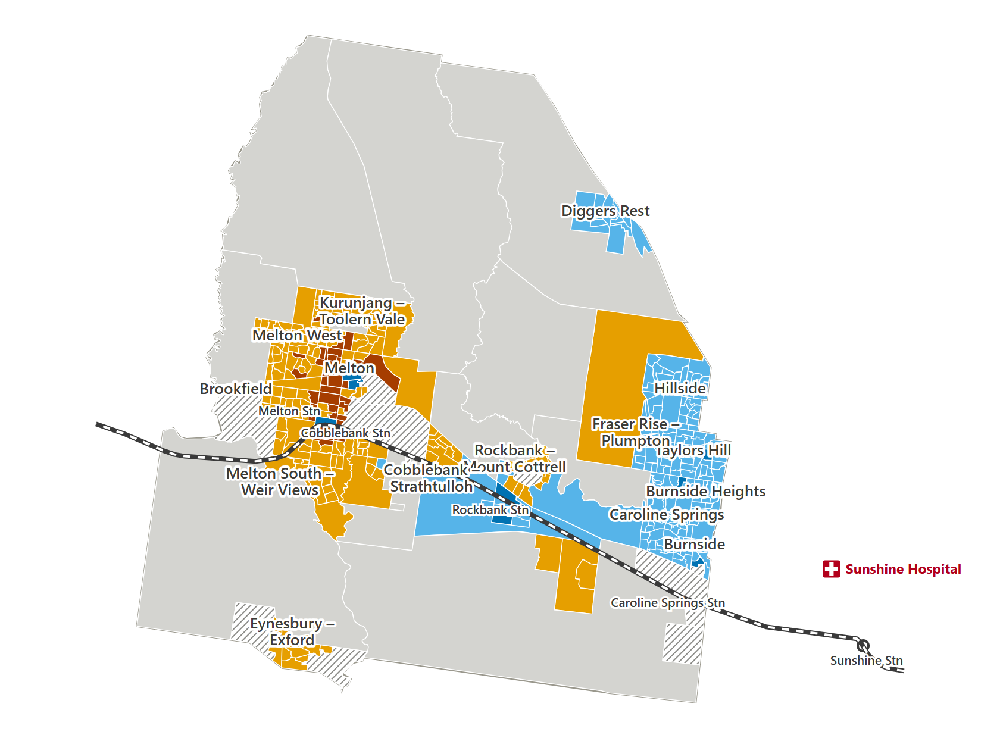
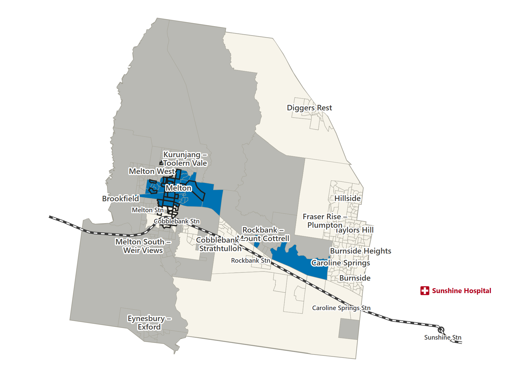
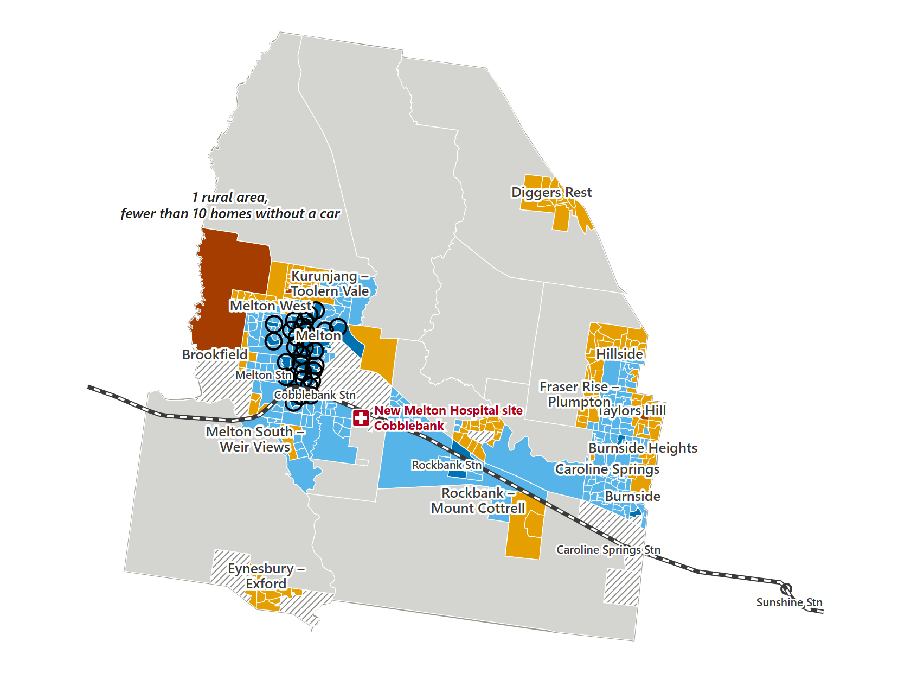
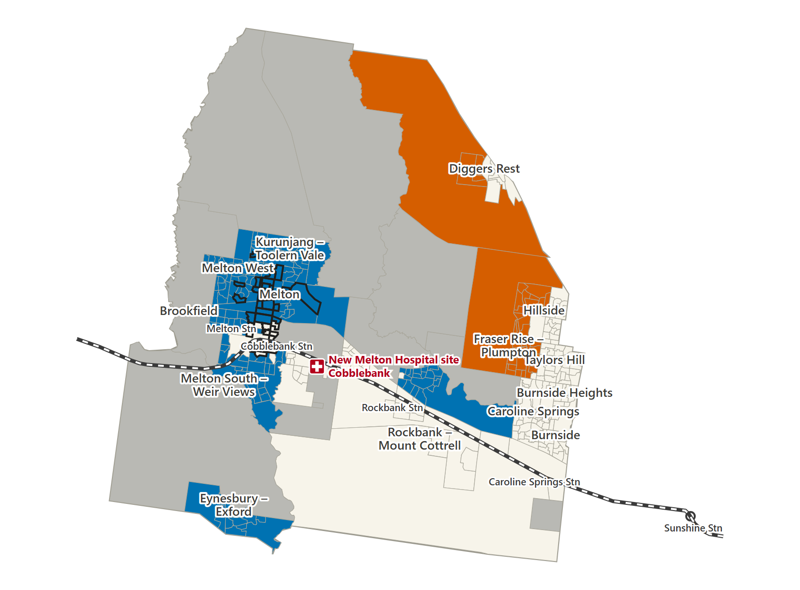

Four changes, compared with today
Each change uses routes that already exist. None adds a new route or stop. We compare each one with today, at two times: leaving hospital at 6 pm and at 8:30 pm.
All four side by side
An area is helped when it is no longer a priority area: a long trip to hospital AND many homes with no car.
Homes with no car in areas helped, leaving hospital at 6 pm
An area is helped when it leaves the priority group (long trip to hospital AND many homes with no car). Compared with today.
- S1 More frequent busesabout 90 (3 areas) none
- S2 Better bus–train timingabout 0 (0 areas) none
- S3 Later evening busesabout 0 (0 areas) none
- S4 Cobblebank hospitalabout 500 (30 areas) none
Homes with no car (rounded to the nearest 10)
Homes with no car that gain or lose a trip home, leaving hospital at 8:30 pm
Compared with today at 8:30 pm. For S4 the trip home starts at the Cobblebank site, today at Sunshine Hospital.
- Gain a trip home (had none)
- Lose their trip home
- S1 More frequent busesGain: about 0 (0 areas) Gain: noneLose: about 0 (0 areas) Lose: none
- S2 Better bus–train timingGain: about 0 (0 areas) Gain: noneLose: about 0 (0 areas) Lose: none
- S3 Later evening busesGain: about 450 (45 areas) Gain: noneLose: about 0 (0 areas) Lose: none
- S4 Cobblebank hospitalGain: about 820 (168 areas) Gain: noneLose: about 70 (41 areas) Lose: none
Homes with no car (rounded to the nearest 10)
S1 More frequent buses
One extra bus trip halfway between each pair of existing trips.
The extra trips run on the same bus routes and stop at the same stops. More buses mean shorter waits for some people.
- Areas helped, 6 pm
- 3
- Homes with no car in those areas
- about 90
- Areas that gain a trip home, 8:30 pm
- 0
Keep in mind
Not kept if you miss one connection. We tested a missed first connection, with a delay of 10 or 20 minutes. Then 0 areas stay helped.

Swipe sideways to see the whole map.
- Priority: long trip AND many homes with no car
- Not a priority area: long trip (orange) or shorter trip (blue)
- Helped: left the priority group (vs today)
- Grey: no full round trip by public transport. Striped: too few homes to measure.

S2 Better bus–train timing
Bus trip times shifted to meet V/Line trains.
Bus times are moved so buses arrive at the station in time for a V/Line train. This is done for all Melton buses that feed the stations.
- Areas helped, 6 pm
- 0
- Round trips shorter, 6 pm
- 68
- Round trips longer, 6 pm
- 77
Keep in mind
It helps some trips and hurts others. Out of 380 areas compared at 6 pm, 68 round trips get shorter and 77 get longer.

Swipe sideways to see the whole map.
- Priority: long trip AND many homes with no car
- Not a priority area: long trip (orange) or shorter trip (blue)
- Grey: no full round trip by public transport. Striped: too few homes to measure.

S3 Later evening buses
The last bus trips repeated until 10 pm.
At 6 pm nothing changes: people are home before the extra buses run. The change shows up later in the evening, when today many areas have no trip home.
- Areas that gain a trip home, 8:30 pm
- 45
- Homes with no car in those areas
- about 450
- Of these, priority areas
- 19
- Homes with no car in those priority areas
- about 290
- Areas that lose a trip home
- 0
Keep in mind
It depends on one bus. Every new trip home uses the same extra bus: route 456, leaving its first stop at 9:48 pm.

Swipe sideways to see the whole map.
- Gets a trip home (had none today)
- Trip home both times
- No trip home either way
- Outlined: priority area today (6 pm)

S4 Cobblebank hospital
New hospital site on today's network — not a future timetable.
A new hospital is planned at Cobblebank, inside the City of Melton. We move the trip's end point to that site. The buses and trains stay as they are today, because no future timetable is public.
- Areas helped, 6 pm
- 30
- Homes with no car in those areas
- about 500
- Areas that gain a trip home, 8:30 pm
- 168
- Areas that lose a trip home, 8:30 pm
- 41
Keep in mind
This is the new site on today's network. Late at night many trips get longer. At 8:30 pm, 181 areas have a trip home both today and with S4. Of these, 121 get longer and 60 get shorter.

Swipe sideways to see the whole map.
- Priority: long trip AND many homes with no car
- Not a priority area: long trip (orange) or shorter trip (blue)
- Helped: left the priority group (vs today)
- Grey: no full round trip by public transport. Striped: too few homes to measure.


Swipe sideways to see the whole map.
- Gets a trip home (had none today)
- Loses its trip home
- Pale: trip home both times. Grey: no trip home either way.
- Outlined: priority area today (6 pm)